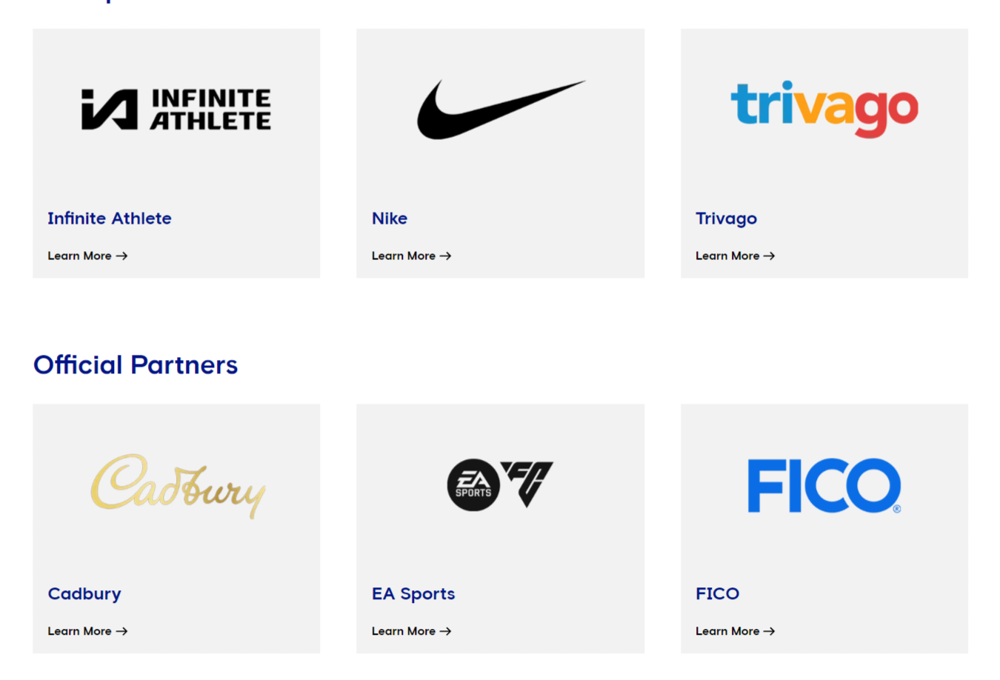

About the Club
General information about Chelsea FC, club partners, club personnel and club ambassadors as well as details on Chelsea's commitment to equality.

General Information
- Stamford Bridge
- Fullham Road
- London
- SW6 1HS
Adress:
Club Nickname: The Blues
Formed: 1905
Stadium Capacity: 40,022
Pitch: 103 x 67.5 metres
Club Partners
Principal Partners:
Chelsea FC's official club partners - principal partners, official partners and women's team partners. Info on how to contact the Chelsea FC Partnerships Team.
Players
- Goalkeepers:
- Robert Sanchez
- Marcus Bettinelli
- Djordje Petrovic
- Defenders:
- Alex Disasi
- Marc Cucurella
- Benoit Badiashile
- Thiago Silva
- Trevoh Chalobah
- Ben Chilwell
- Reece James
- Levi Colwill
- Malo Gusto
- Ian Maatsen
- Wesley Fofana
- Enzo Fernandes
- Lesley Ugochukwu
- Carney Chukwuemeka
- Conor Gallagher
- Moises Caicedo
- Romeo Lavia
- Attackers:
- Raheem Sterling
- Mykhailo Mudryk
- Noni Madueke
- Nicolas Jackson
- Christopher Nkunku
- Armando Broja
- Cole Palmer
Stadium History:

Stamford Bridge is one of the oldest football grounds in the country and has been the home of Chelsea Football Club since our formation in 1905.
The Bridge opened as a sporting arena on 28 April 1877. For the first 27 years of its existence it was used almost exclusively for the traditionally popular Victorian pursuit of athletics meetings by the London Athletic Club.
In 1904 the ownership of the modest ground changed hands when Mr Henry Ausgustus (Gus) Mears and his brother, Mr J T Mears, obtained the deeds, having previously acquired additional land (formerly a large market garden) with the aim of hosting a newer sport they had fallen in love with - football - which had swept the north of England and the Midlands and was growing in interest rapidly in the capital city.
Located:
Stamford Bridge is the most central of the London football stadiums and is easily accessible by tube (Fulham Broadway) or bus from the centre of the city.As parking on a matchday is very limited the best way to travel to Stamford Bridge is by public transport.Travel can be planned using Transport for London's journey planner.The nearest tube station is Fulham Broadway on the District Line. If changing at Earl's Court station, take a Wimbledon-bound tube. There are two Overground stations near to Stamford Bridge, West Brompton and Imperial Wharf, which are approximately a 15-minute walk from the stadium. These are both on a direct line between Clapham Junction and Willesden Junction. Fulham Broadway tube station is wheelchair accessible. The station also has lift access.